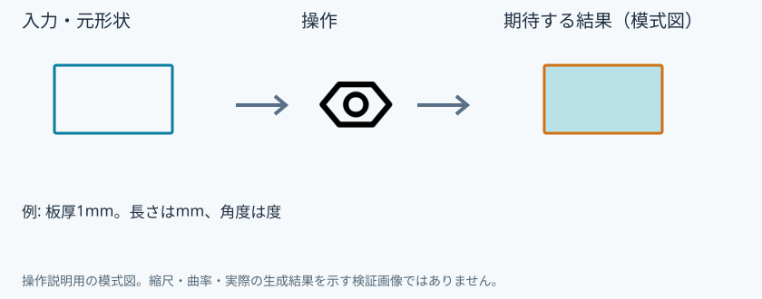
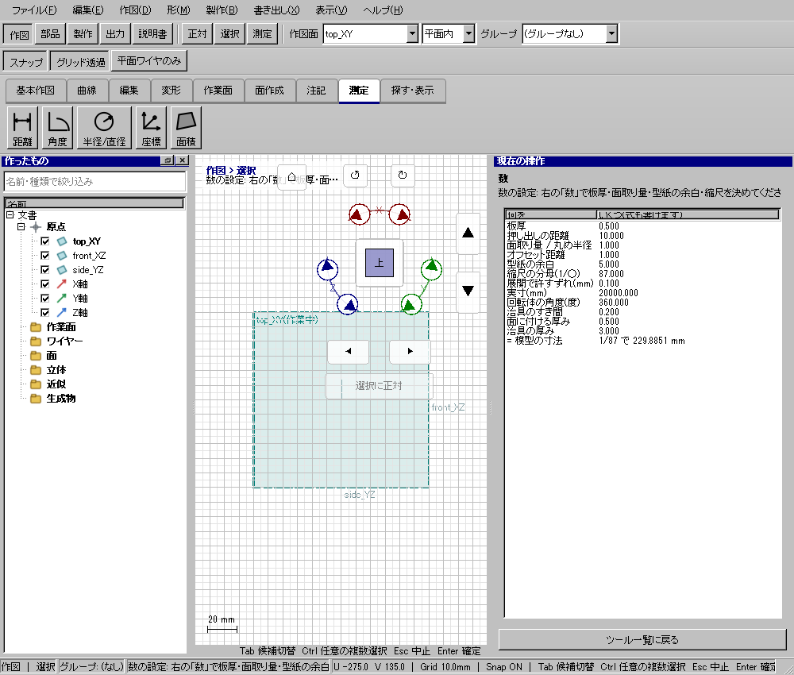

数の設定
数の設定
具体例: 共通の板厚と縮尺を確認する

準備
文書を開く
操作手順
- 数の設定を開く
- 板厚などの欄を変更して確定する
設定: 例: 板厚1mm。長さはmm、角度は度
結果を確認
対応するツールの共通値に反映される。既存形状が無断で変わることはない。
取消・やり直し
ダイアログの取消、またはペインの取消を使います。即時操作には未確定段階がありません。 確定済みの文書変更はCtrl+Z、やり直しはCtrl+Yです。保存・書出し済みのファイルはUndoの対象ではありません。
進めない場合
板厚・面取り量・型紙の余白・縮尺など、道具が共通で使う数を決めます。
対象欄と3Dの強調を照合し、必要な線・面・部品を各役割へ指定します。処理中は計算表示を確認し、取消が可能な処理は取消を使います。
Windows版の操作画面
